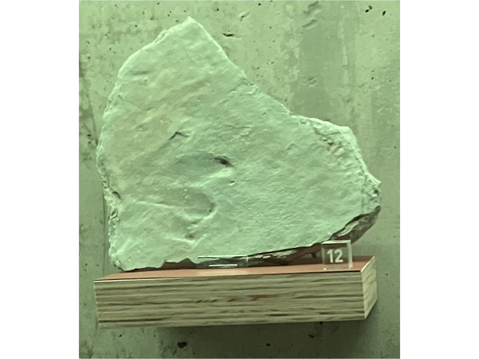
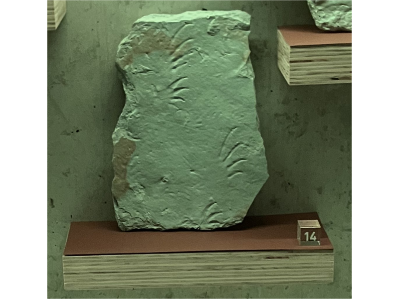

5. Leven op het strand





Terug naar de plattegrond
Winterswijk is wereldwijd bijzonder. Niet alleen door de fossielen van zeereptielen, maar ook door de fossiele pootafdrukken van landdieren. Deze dieren liepen ongeveer 245 miljoen jaar geleden over het strand. Misschien aten ze ook resten van aangespoelde reptielen uit de zee.
Onderzoekers weten dat deze loopsporen niet van zeereptielen zijn. Dat blijkt uit de bouw van de skeletten. De sporen zijn achtergelaten door echte landdieren. Hoe deze dieren er precies uitzagen, weten we niet. We kennen ze alleen van hun voetafdrukken. Loopsporen van reptielen zijn zeldzaam, maar voor de wetenschap heel belangrijk. Ze laten zien hoe dieren zich gedroegen. Liepen ze alleen of in een groep? Waren er jonge dieren samen met volwassen dieren? Welke soorten leefden naast elkaar? Op zulke vragen geven botten geen antwoord, maar voetsporen soms wel. Je kunt dus zeggen: loopsporen zijn fossiel gedrag.
De fossiele voetsporen uit Winterswijk verschillen sterk in grootte. Sommige zijn minder dan 1 centimeter lang, andere wel 20 centimeter. De kleine dieren waren waarschijnlijk 20 tot 30 centimeter lang. Soms is zelfs een heel spoor gevonden, met afdrukken van een lange staart. Tot nu toe zijn er zes soorten voetafdrukken herkend, en dat aantal groeit nog steeds.
De nummers op de blokjes verwijzen naar de volgende vondsten.
11. Loopspoor van een klein reptiel de Procophonichnium haarmuehlensis.
Te zien zijn de indrukken van linker- en rechterpoten, en een sleepspoor van de staart.
12. Indruk van de poot van een groot reptiel: de Coelurosaurichnus ratumensis.
Deze soort is alleen uit Oost-Nederland bekend. Het reptiel werd waarschijnlijk 4 to 5 meter groot.
13. Indruk van een voor- en achterpoot van een Brachy-chirotherium paraparvum.
Het reptiel dat deze sporen achterliet, was waarschijnlijk 3 tot 4 meter groot. Het had een grote achterpoot en een veel kleinere voorpoot. Opvallend zijn de duidelijk herkenbare huidafdrukken; en het feit dat het reptiel iets weggleed bij het lopen in de modder.
14. Het reptiel dat deze sporen achterliet was een Rhynchosauroides peabodyi.
Bijzonder is dat dit reptiel bij het lopen de achterpoot vóór de voorpoot neerzette. Ook bij dit spoor zijn de huidafdrukken goed te zien.